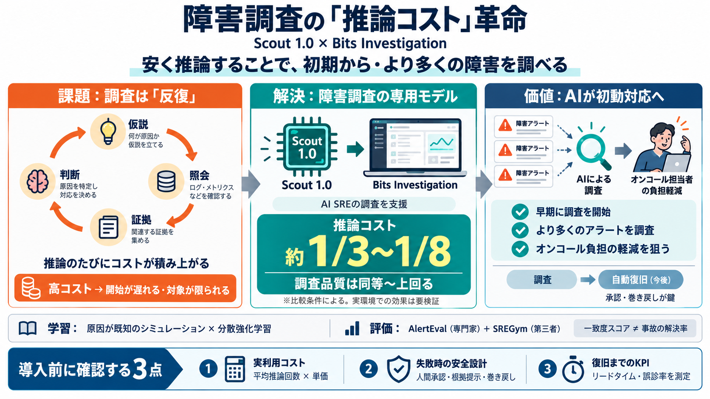

Scout 1.0: Post-Training a Model for SRE Investigations
Date: October 15, 2026 AVERAGE SCORE → 48 50 52 54 56 58 60 62 64 66 68 1× 5× 10× 15× 20× 25× 30× $$$ COST PER INVESTIGA…

Date: October 15, 2026 AVERAGE SCORE → 48 50 52 54 56 58 60 62 64 66 68 1× 5× 10× 15× 20× 25× 30× $$$ COST PER INVESTIGA…
@atalwalkar Excited to introduce Scout 1.0, the model powering Bits Investigation, Datadog’s AI SRE agent for complex t…
We have also evaluated Scout on SREGym, a third-party benchmark, to test its performance outside AlertEval. We again hav…
Training method Scout 1.0 was built on GLM-5.3 Flash and post-trained using reinforcement learning in simulated investi…
Introducing Scout 1.0, our first AI model specialized for investigating production incidents. Scout matches frontier-mod…